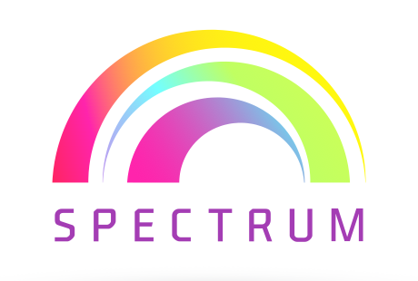
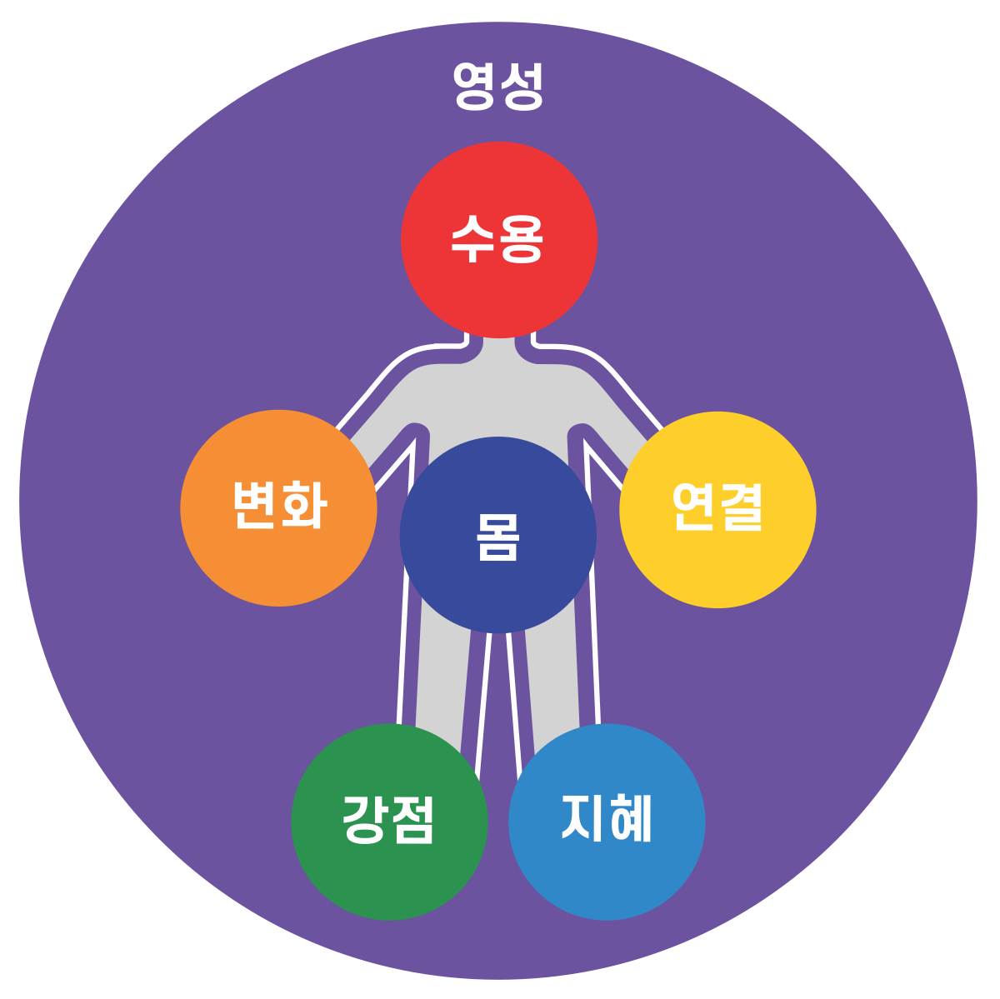

스펙트럼 치료
단순한 증상관리를 넘어, 몸과 관계와 삶 전체의 회복을 돕는 통합 정신심리치료
스펙트럼(SPECTRUM) 치료는 가톨릭대학교 정신건강의학과 채정호 교수가 오랜 임상 경험과 연구를 바탕으로 동료 정신건강 전문가들과 함께 개발한 통합 정신심리치료 체계입니다. 우울, 불안, 트라우마, 울분, 번아웃과 같은 정신적 고통을 하나의 증상이나 진단명만으로 보지 않고, 한 사람의 생각과 감정, 몸, 관계, 삶의 의미와 영성까지 온전하게 살펴봅니다.
오늘날의 정신적 고통은 매우 복합적입니다. 약물치료만으로 충분하지 않을 때가 있고, 생각을 바꾸는 것만으로 해결되지 않는 문제도 많습니다. 몸은 여전히 긴장되어 있고, 관계는 단절되어 있으며, 삶의 방향과 의미를 잃은 채 살아가기도 합니다. 따라서 현대의 정신건강 치료에는 한 가지 이론이나 기법을 모든 사람에게 똑같이 적용하는 방식이 아니라, 각 사람의 상태와 필요에 따라 다양한 치료 자원을 유연하게 연결하는 체계가 필요합니다. 스펙트럼(SPECTRUM) 치료는 이러한 시대적 요청에 응답하기 위해 개발된 ‘실제적인 현실 기반 통합 정신치료 모형’입니다. 특정 학파의 교조적인 틀에 얽매이지 않고, 인지행동치료(CBT)의 구조화된 접근과 명상의 수용, 관찰, 초월이라는 요소를 중심축으로 삼아 동서양의 임상적 지혜를 유연하게 융합하였습니다.
7가지 핵심 모듈
스펙트럼 치료는 인간 존재의 치유와 성장에 필요한 본질적인 요소를 일곱 가지 차원의 무지개 스펙트럼으로 구조화하여 개입합니다.

고통을 부정하거나 제거하려는 강박에서 벗어나, 현재의 경험과 있는 그대로의 나를 사실로서 인정하고 품는 치유의 출발점입니다.
수용이라는 안정적인 토대 위에서 고착된 인지와 행동 양상을 유연하게 전환시키고, 가장 작은 단위부터 다른 선택을 시도하는 실천적 과정입니다.
내면의 분열을 통합하고 타인, 공동체, 세계와의 관계를 복원함으로써 만성적인 외로움과 공허감에서 벗어나 존재적 소속감을 회복합니다.
병리와 결함에만 매몰되던 시선을 돌려, 개인이 이미 내면에 지니고 있는 고유한 자원과 회복탄력성, 살아남은 능력을 발견하고 강화합니다.
상실과 불확실성 등 해결되지 않는 삶의 근본적인 문제를 맥락적, 상대적 사고를 통해 더 넓은 안목으로 조망하고 재해석하는 능력입니다.
마음과 신체의 통합적 작용을 인식하고, 호흡과 움직임 등의 상향식(Bottom-up) 접근을 통해 언어 이전의 외상 기억을 다스리며 자기 조절력을 높입니다.
종교적 신념을 넘어 자신보다 더 큰 초월적 가치와 연결됨으로써, 어떤 역경 속에서도 삶의 궁극적인 의미와 목적을 재정의하는 심층적 자원입니다.
스펙트럼 치료의 8가지 독특한 특징
스펙트럼 치료는 영문 머리글자(S.P.E.C.T.R.U.M)가 상징하는 여덟 가지 훌륭한 임상적 특성을 공유합니다.
Sequential (순차적)
각 모듈의 핵심 요소를 유유히 반복 순환하여 지식이 머리로만 남지 않고 삶에 온전히 체화되도록 돕습니다.
Practical (실제적)
제한된 시간 안에서도 밀도 높은 개입이 가능하도록, 척박한 국내 임상 현장의 현실적 제약에 맞춰 고안된 실용주의적 치료입니다.
Eclectic (절충적)
현존하는 다양한 치료 학파의 장점들을 이론적 충돌 없이 환자의 상태에 맞춰 가장 효과적인 기법으로 선별하여 적용합니다.
Comprehensive (통합적)
단순한 증상 완화를 넘어, 긍정심리학적 요소를 결합하여 좋은 삶과 웰빙의 영역까지 전인적으로 포괄합니다.
Transdiagnostic (초진단적)
분절된 진단명을 넘어 우울, 불안, 외상, 울분 등 다양한 정서장애가 공유하는 공통적인 병리 기전을 직접 다루며, 일반인의 멘탈 웰빙에도 유용합니다.
Resilient (회복탄력지향)
고통 속에서도 좌절을 견디고 대처하는 내적 능력을 키워, 단순한 증상 소멸을 넘어 외상 후 성장으로 나아가게 합니다.
Unitary (단일형)
증상의 경중에 따라 모듈의 시점과 속도는 조절하되, 모든 대상자에게 일곱 가지 보편적 모듈을 일관되게 적용하는 단일한 체계를 갖추고 있습니다.
Meditative (명상적)
전통적인 집중 명상부터 알아차림을 강화하는 마음챙김까지, 각 모듈을 촉진하고 내면의 평온을 이끄는 강력한 활성화 기제로 명상을 융합합니다.
스펙트럼 치료는 치료자가 일방적으로 기법을 주입하는 기술자가 아니라, 삶의 고통과 회복의 여정을 함께 걷는 동행자가 되는 치료입니다. 증상을 제거하려는 투쟁을 멈추고 현실에 정직하게 발을 딛는 순간, 비로소 삶의 전반이 주체적으로 재조직되는 진짜 변화가 시작됩니다. 스펙트럼 치료가 당신의 삶 위에 치유의 무지개를 피워내는 든든한 지도가 되어 드리겠습니다.
진단명이 아니라, 지금 이 사람에게 필요한 것
스펙트럼 치료의 가장 큰 특징은 지금까지 인류가 발전시켜 온 다양한 치료법을 폭넓게 활용할 수 있다는 점입니다. 약물치료를 비롯하여 인지행동치료, 수용전념치료, 마음챙김, 긍정심리치료, 지혜치료, 관계치료, 트라우마 치료, 몸 기반 치료, 명상과 영적 돌봄 등을 환자에게 필요한 방식으로 선택하고 연결합니다. 특정 치료학파를 배척하거나 하나의 방법만을 고집하지 않습니다. 효과가 검증된 치료법들을 존중하면서, 각각의 장점을 한 사람의 회복을 위해 유기적으로 통합합니다.
스펙트럼 치료는 단순히 여러 기법을 모아놓은 절충적 치료가 아닙니다. 환자가 지금 어떤 상태에 있으며, 무엇이 회복을 가로막고 있고, 어느 영역부터 개입해야 하는지를 판단하도록 돕는 하나의 임상 운영체계입니다. 같은 우울증이라도 어떤 사람에게는 몸의 긴장과 수면을 먼저 다루어야 하고, 다른 사람에게는 상실과 관계의 상처를 살펴야 하며, 또 다른 사람에게는 삶의 의미와 방향을 다시 찾아야 합니다. 스펙트럼 치료는 진단명이 아니라 ‘이 사람에게 지금 무엇이 필요한가’를 중심에 둡니다.
또한 스펙트럼 치료는 최근 정신의학의 새로운 이해 철학인 행위, 생성 정신의학(Enactive Psychiatry)을 임상 현장에서 구현하는 방법론입니다. 행위, 생성 정신의학은 인간의 마음을 뇌 안에서만 일어나는 현상으로 보지 않습니다. 마음은 뇌와 몸, 환경과 관계, 그리고 삶의 경험이 끊임없이 상호작용하는 과정에서 형성된다고 봅니다. 정신적 고통 역시 단순한 뇌의 이상이나 잘못된 생각이 아니라, 자신과 세계를 경험하고 관계 맺는 방식이 경직되고 좁아진 상태로 이해합니다.
따라서 치료의 목표도 증상을 없애는 데 머물지 않습니다. 환자가 다시 몸의 신호를 느끼고, 새로운 가능성을 발견하며, 선택하고 행동할 힘을 되찾도록 돕습니다. 두려움 때문에 피하기만 했던 세계에 다시 다가가고, 단절되었던 사람들과 연결되며, 자신의 가치에 따라 살아갈 수 있도록 돕는 것입니다. 환자는 치료의 수동적인 대상이 아니라 자신의 삶을 새롭게 만들어가는 능동적인 주체가 됩니다.
스펙트럼 치료를 구성하는 각 치료법은 정신의학과 심리학의 과학적 연구와 임상적 근거에 기반합니다. 수용, 인지와 행동의 변화, 관계 회복, 강점 활용, 신체 자각, 명상과 의미 추구가 정신건강에 미치는 효과는 여러 연구를 통해 확인되어 왔습니다. 스펙트럼 치료는 이러한 근거 기반 치료들을 실제 임상에서 체계적으로 적용하고 있으며, 통합 프로그램으로서의 효과에 대해서도 지속적인 연구와 검증을 이어가고 있습니다.
우리는 증상만으로 이루어진 존재가 아닙니다. 생각하는 사람이면서 느끼는 사람이고, 관계 속에 살아가는 사람이며, 몸을 지닌 존재이고, 의미를 추구하는 존재입니다. 그러므로 정신건강의 회복도 인간의 일부가 아니라 전체를 향해야 합니다.
스펙트럼 치료는 마음의 문제를 고치는 데서 그치지 않습니다. 한 사람이 다시 자신과 연결되고, 세계와 관계를 맺으며, 자기다운 삶을 살아가도록 돕습니다. 증상의 완화를 넘어 삶의 온전함을 회복하는 것, 그것이 스펙트럼 치료가 지향하는 정신건강 치료입니다.